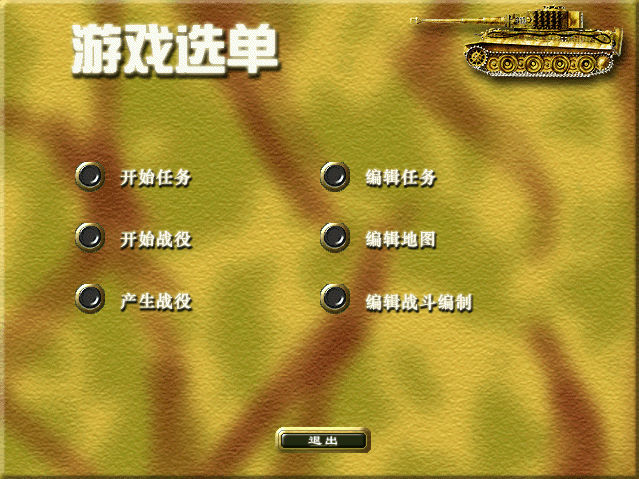
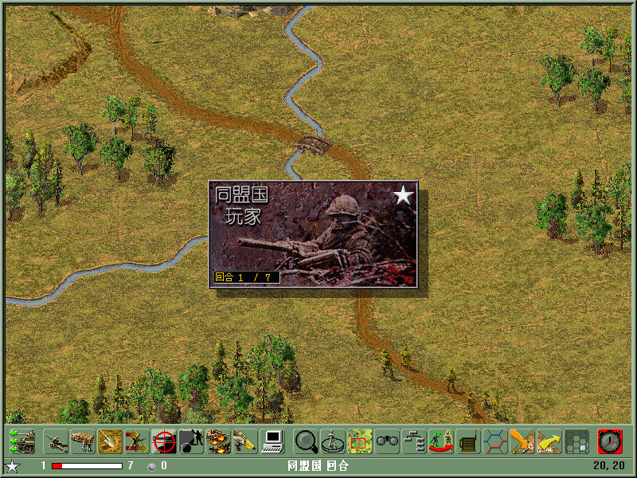

名稱：歐洲戰火之西線風雲 (West Front／TalonSoft's West Front，簡中／英文版)
簡介：TalonSoft 1998年出品的回合制戰術遊戲，1999年再推出「海獅行動（Operation Sea
Lion）」資料片，2001年由世紀雷神簡中化並代理發行 [待補]。


保護：英文版為SafeDisc 1.00，英文資料片為SafeDisc 1.30，簡中版為光碟，破解碼：
wf.exe
E8 D2 10 00 00 84 C0 0F 84 CC 00 00 00 (簡中版)
90 90 90 90 90 -- -- 90 90 90 90 90 90
備註：簡中版已含資料片。
檔案：wfe106u.rar = 英文1.06更新檔（主程式與資料片通用）
nocd106.rar = 英文1.06免光碟檔（主程式與資料片通用）